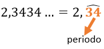
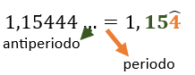
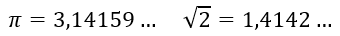

Clasificación de los números decimales

Para comprender mejor los números decimales, los clasificamos según sus características encontrándonos con los siguientes tipos de números decimales:
- Decimales exactos
Estos son los decimales más sencillos al tener una cola decimal finita. Esto quiere decir que su cola decimal tiene una determinada cantidad de cifras, y esta se detiene en un valor posicional concreto. Ejemplos:
5,356; 9,1; 0,28
- Decimal periódico
Estos decimales poseen infinitas cifras decimales y en ellas hay una secuencia que se repite continuamente. La parte que se repite se llama periodo y se suele representar con un arco encima suyo. Se dividen a su vez en dos tipos:
- Decimal periódico puro
Las expresiones decimales periódicas cuyo desarrollo decimal periódico comienza inmediatamente después de la coma se llaman periódicos puros. Ejemplo: Decimal periódico mixto
Las expresiones decimales periódicas cuyo periodo se encuentra más allá de la separación decimal reciben la denominación de número decimal periódico mixto y la parte decimal situada entre la separación decimal y el periodo se llama anteperiodo.

- Decimal infinito no periódico
Los números decimales infinitas no periódicos son aquellos que tienen infinitas cifras decimales, las cuales no se repiten siguiendo ningún patrón.
En este grupo de número decimales, se encuentran números muy conocidos en matemáticas, como el número π, el número e o el número de oro, además de las raíces que no son exactas. Por ejemplo:

NOTA: los decimales exactos y los periódicos pueden ser expresados en forma de fracción (como veremos en un punto posterior) y forman el conjunto numérico de los números racionales. En cambio, los decimales infinitos no periódicos no se pueden expresar como fracciones y constituyen el conjunto numérico de los números irracionales.